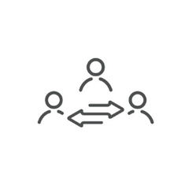

Nos services

Médiation
La médiation est un processus volontaire et confidentiel, par lequel les parties, pour mettre fin à un conflit qui les oppose, recourent à un tiers indépendant et impartial, le médiateur...
Arbitrage
L’arbitrage est une procédure qui consiste à soumettre par voie contractuelle, un litige né ou à naitre entre deux ou plusieurs parties à la juridiction d’un tiers, indépendant et...
Décision d'urgence
Procédure contractuelle destinée à donner une solution temporaire à un litige né au cours de l’exécution d’un contrat. Cette solution s’impose aux parties jusqu’à l’éventuelle décision définitive...